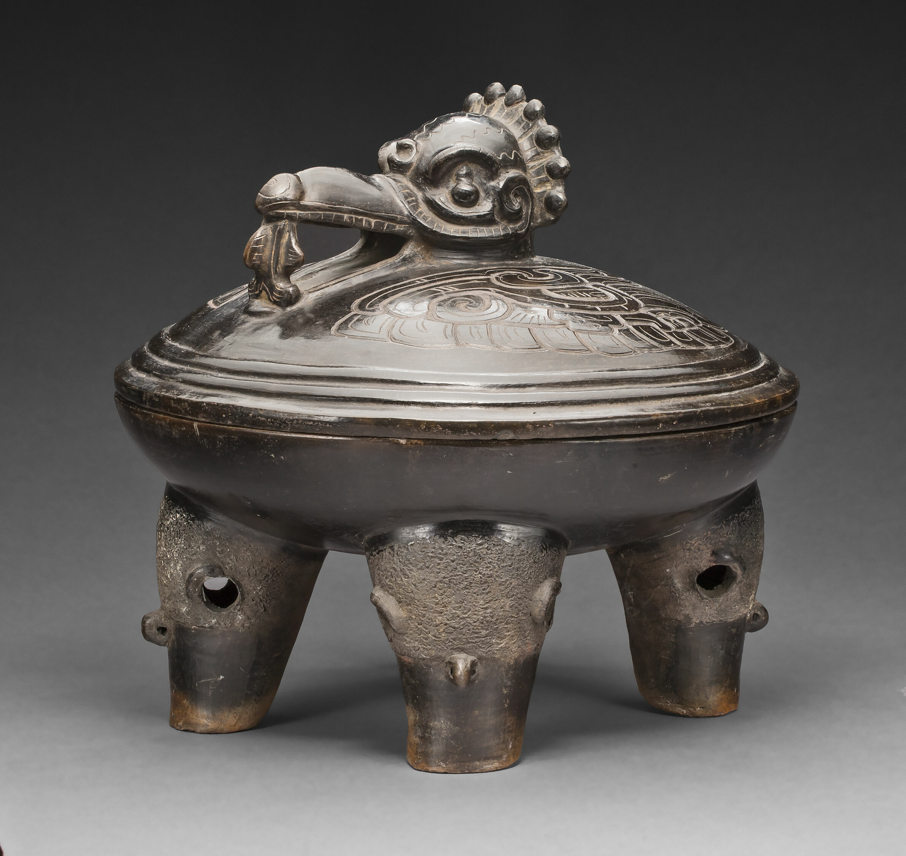

Plat avec couvercle à têtes d'oiseau et de pécari
Auteur: inconnu
Date: vers 200-300 ap. J.C.
Dimensions: 24,8 x 25,4 cm
Matériaux: céramique
Lieu de conservation: The Art Institute of Chicago
© The Art Institute of Chicago
